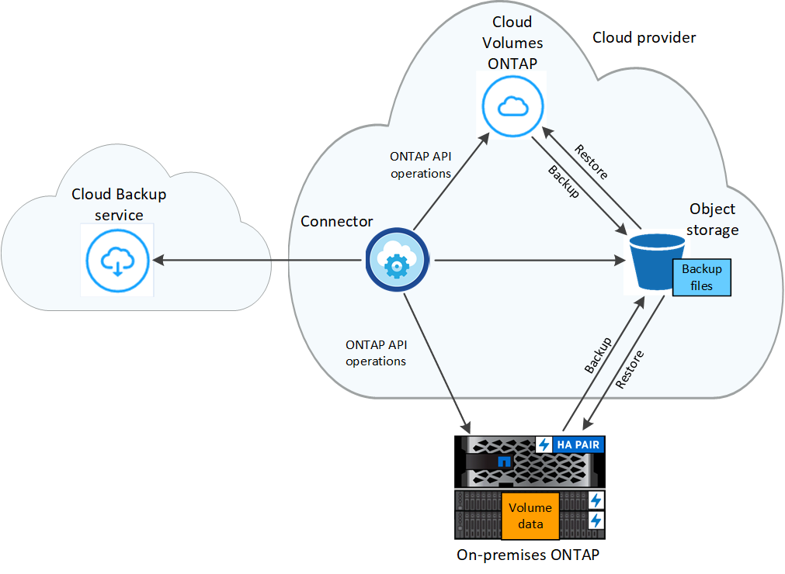

Amazon Web Services
Amazon Web Services
 Google Cloud
Google Cloud
 Microsoft Azure
Microsoft Azure
 Demander de modifier un document
Demander de modifier un document Modifier sur GitHub
Modifier sur GitHub Guide des contributeurs
Guide des contributeursProtection des données du cluster ONTAP à l’aide de Cloud Backup
Contributeurs
Cloud Backup inclut des fonctionnalités de sauvegarde et de restauration pour une protection et un archivage à long terme des données de votre cluster ONTAP. Les sauvegardes sont automatiquement générées et stockées dans un magasin d’objets de votre compte cloud public ou privé, indépendamment des copies Snapshot de volume utilisées pour la restauration ou le clonage à court terme.
Si nécessaire, vous pouvez restaurer tout un volume, un dossier, ou un ou plusieurs fichiers, d’une sauvegarde vers le même environnement de travail ou vers un environnement de travail différent.
Caractéristiques
Fonctionnalités de sauvegarde :
-
Sauvegardez des copies indépendantes de vos volumes de données dans un stockage objet à faible coût.
-
Appliquer une seule stratégie de sauvegarde à tous les volumes d’un cluster, ou attribuer différentes règles de sauvegarde aux volumes ayant des objectifs de point de restauration uniques.
-
Créer une policy de sauvegarde à appliquer à tous les futurs volumes créés dans le cluster.
-
Créez des fichiers de sauvegarde immuables afin qu’ils soient verrouillés pour la période de conservation.
-
Analysez les fichiers de sauvegarde afin d’obtenir un risque d’attaque par ransomware. Enfin, supprimez/remplacez automatiquement les sauvegardes infectées.
-
Transférez les anciens fichiers de sauvegarde vers le stockage d’archivage pour réduire les coûts.
-
Supprimez la relation de sauvegarde afin d’archiver les volumes source inutiles tout en conservant les sauvegardes de volume.
-
Sauvegarder des données dans le cloud et depuis des systèmes sur site vers un cloud public ou privé.
-
Pour les systèmes Cloud Volumes ONTAP, vos sauvegardes peuvent résider sur un abonnement/compte différent ou sur une autre région.
-
Les données de sauvegarde sont sécurisées par chiffrement AES 256 bits au repos et TLS 1.2 HTTPS en transit.
-
Utilisez vos propres clés gérées par le client pour le chiffrement des données au lieu d’utiliser les clés de chiffrement par défaut fournies par votre fournisseur cloud.
-
Prise en charge de 4,000 sauvegardes maximum d’un seul volume.
Fonctions de restauration :
-
Restauration des données à partir d’un point dans le temps spécifique
-
Restaurez un volume, un dossier ou des fichiers individuels vers le système source ou vers un autre système.
-
Restaurez les données dans un environnement de travail à l’aide d’un autre abonnement/compte ou dans une autre région.
-
Restaure les données au niveau bloc en les plaçant directement à l’emplacement que vous indiquez, tout en conservant les ACL d’origine.
-
Catalogues de fichiers consultables pour la sélection de dossiers et de fichiers individuels pour la restauration de fichiers uniques.
Environnements de travail ONTAP pris en charge et fournisseurs de stockage objet
Cloud Backup vous permet de sauvegarder des volumes ONTAP à partir de ces environnements de travail vers un stockage objet dans plusieurs fournisseurs de cloud public et privé :
| Environnement de travail source | Destination du fichier de sauvegarde ifdef::aws[] |
|---|---|
Cloud Volumes ONTAP dans AWS |
Amazon S3 endif::aws[] ifdef::Azure[] |
Cloud Volumes ONTAP dans Azure |
Azure Blob endif::Azure[] ifdef::gcp[] |
Cloud Volumes ONTAP dans Google |
Google Cloud Storage endif::gcp[] |
Système ONTAP sur site |
Ifdef::aws[] Amazon S3 endif::aws[] ifdef::Azure[] Azure Blob endif::Azure[] ifdef::gcp[] Google Cloud Storage endif::gcp[] NetApp StorageGRID |
Vous pouvez restaurer un volume, un dossier ou des fichiers individuels depuis un fichier de sauvegarde ONTAP vers les environnements de travail suivants :
| Emplacement du fichier de sauvegarde | Destination Environnement de travail ifdef::aws[] |
|---|---|
Amazon S3 |
Cloud Volumes ONTAP dans le système ONTAP sur site AWS endif::aws[] ifdef::Azure[] |
Blob d’Azure |
Cloud Volumes ONTAP dans le système ONTAP sur site Azure endif::Azure[] ifdef::gcp[] |
Google Cloud Storage |
Cloud Volumes ONTAP dans le système ONTAP sur site Google endif::gcp[] |
NetApp StorageGRID |
Système ONTAP sur site |
Notez que les références aux « systèmes ONTAP sur site » incluent les systèmes FAS, AFF et ONTAP Select.
Assistance pour les sites sans connexion Internet
Cloud Backup peut être utilisé sur un site sans connectivité Internet (également appelée site « hors ligne » ou « sombre ») pour sauvegarder les données en volume des systèmes ONTAP locaux sur site vers des systèmes StorageGRID NetApp locaux. La restauration de volumes et de fichiers est également prise en charge dans cette configuration. Dans ce cas, vous devrez déployer le connecteur BlueXP (version minimale 3.9.20) sur le site sombre. Voir "La sauvegarde des données ONTAP sur site dans StorageGRID" pour plus d’informations.
Volumes pris en charge
Cloud Backup prend en charge plusieurs types de volumes :
-
Volumes FlexVol de lecture/écriture
-
Volumes de destination SnapMirror avec protection des données (DP)
-
Volumes SnapLock Enterprise (requiert ONTAP 9.11.1 ou version ultérieure)
-
Les volumes de conformité SnapLock ne sont actuellement pas pris en charge.
-
-
Volumes FlexGroup (requiert ONTAP 9.12.1 ou version ultérieure)

|
Limitations de restauration de volume FlexGroup :
|
Le coût
Deux types de coûts sont associés à l’utilisation de Cloud Backup avec les systèmes ONTAP : les frais en ressources et les frais de service.
Frais de ressources
Les frais en ressources sont facturés au fournisseur cloud pour la capacité de stockage objet et pour l’écriture et la lecture des fichiers de sauvegarde dans le cloud.
-
En matière de sauvegarde, vous payez votre fournisseur cloud pour les coûts de stockage objet.
Étant donné que Cloud Backup préserve l’efficacité du stockage du volume source, vous payez les coûts de stockage objet du fournisseur cloud pour les données après efficacité ONTAP (pour la quantité de données plus faible après l’application de la déduplication et de la compression).
-
Pour la restauration des données à l’aide de Search & Restore, certaines ressources sont provisionnées par votre fournisseur de cloud. Le coût par Tio est associé à la quantité de données analysées par vos requêtes de recherche. (Ces ressources ne sont pas nécessaires pour la fonction Parcourir et restaurer.)
-
Dans AWS, "Amazon Athena" et "AWS Glue" Les ressources sont déployées dans un nouveau compartiment S3.
-
Dans Azure, un "Espace de travail Azure Synapse" et "Stockage en data Lake Azure" sont provisionnées dans votre compte de stockage pour stocker et analyser vos données.
-
-
Dans Google, un nouveau compartiment est déployé, et le "Services Google Cloud BigQuery" sont provisionnées au niveau compte/projet.
-
Si vous avez besoin de restaurer des données de volume à partir d’un fichier de sauvegarde déplacé vers un stockage d’archivage, un coût de récupération supplémentaire par Gio et des frais par demande sont facturés par le fournisseur cloud.
Frais de service
Les frais de service sont payés à NetApp et couvrent le coût de créer sauvegardes et de restaurer volumes ou fichiers à partir de ces sauvegardes. Vous ne payez que les données que vous protégez, calculées par la capacité logique utilisée source (before ONTAP before_ ONTAP) des volumes qui sont sauvegardés sur le stockage objet. Cette capacité est également connue sous le nom de téraoctets frontaux (FETB).
Vous pouvez payer le service de sauvegarde de trois façons. La première option consiste à vous abonner à votre fournisseur cloud pour un paiement mensuel. La deuxième option consiste à obtenir un contrat annuel. La troisième option consiste à acheter des licences directement auprès de NetApp. Lire le Licences pour plus de détails.
Licences
Cloud Backup est disponible avec les modèles de consommation suivants :
-
BYOL : licence achetée auprès de NetApp et utilisable avec n’importe quel fournisseur cloud.
-
PAYGO : un abonnement à l’heure sur le marché de votre fournisseur de services cloud.
-
Annuel : contrat annuel sur le marché de votre fournisseur cloud.
|
|
Si vous achetez une licence BYOL auprès de NetApp, vous devez également vous abonner à l’offre PAYGO depuis le marché de votre fournisseur cloud. Votre licence est toujours facturée en premier, mais vous devrez payer à l’heure sur le marché dans les cas suivants :
Si vous disposez d’un contrat annuel sur un marché, l’ensemble de la consommation de Cloud Backup est facturée sur votre contrat. Vous ne pouvez pas combiner un contrat annuel de vente avec un contrat BYOL. |
Bring your own license (BYOL)
BYOL est basé sur la durée (12, 24 ou 36 mois) et sur la capacité par incréments de 1 Tio. Vous payez NetApp pour utiliser le service pendant une période, disons 1 an, et pour une capacité maximale, dites 10 Tio.
Vous recevrez un numéro de série que vous entrez dans la page BlueXP Digital Wallet pour activer le service. Lorsque l’une ou l’autre limite est atteinte, vous devez renouveler la licence. La licence de sauvegarde BYOL s’applique à tous les systèmes source associés à votre "Compte BlueXP".
Abonnement avec paiement à l’utilisation
Cloud Backup propose un modèle de paiement à l’utilisation avec des licences basées sur la consommation. Après votre abonnement sur le marché de votre fournisseur cloud, vous payez par Gio pour les données sauvegardées, sans paiement initial. Votre fournisseur cloud vous facturé mensuellement.
Notez qu’une version d’essai gratuite de 30 jours est disponible lorsque vous vous abonnez initialement à un abonnement PAYGO.
Contrat annuel
Avec AWS, deux contrats annuels sont disponibles pour une durée de 12, 24 ou 36 mois :
-
Un plan de « sauvegarde dans le cloud » vous permet de sauvegarder les données Cloud Volumes ONTAP et les données ONTAP sur site.
-
Ce plan vous permet de regrouper Cloud Volumes ONTAP et Cloud Backup. Cela inclut le nombre illimité de sauvegardes pour les volumes Cloud Volumes ONTAP facturés pour cette licence (la capacité de sauvegarde n’est pas prise en compte avec la licence).
-
Si vous utilisez Azure, vous pouvez demander une offre privée auprès de NetApp, puis sélectionner le plan lorsque vous vous abonnez à Azure Marketplace au moment de l’activation de Cloud Backup.
-
Lorsque vous utilisez GCP, vous pouvez demander une offre privée auprès de NetApp, puis sélectionner le plan lorsque vous vous abonnez à Google Cloud Marketplace au moment de l’activation de Cloud Backup.
Fonctionnement de Cloud Backup
Lorsque vous activez Cloud Backup sur un système ONTAP Cloud Volumes ONTAP ou sur site, le service effectue une sauvegarde complète de vos données. Les instantanés de volume ne sont pas inclus dans l’image de sauvegarde. Après la sauvegarde initiale, toutes les sauvegardes supplémentaires sont incrémentielles, ce qui signifie que seuls les blocs modifiés et les nouveaux blocs sont sauvegardés. Le trafic réseau est ainsi réduit au minimum. Cloud Backup repose sur le "Technologie NetApp SnapMirror Cloud".

|
Toute action effectuée directement depuis votre environnement de fournisseur cloud pour gérer ou modifier des fichiers de sauvegarde peut corrompre les fichiers et entraîner une configuration non prise en charge. |
L’image suivante montre la relation entre chaque composant :

L’emplacement des sauvegardes
Les copies de sauvegarde sont stockées dans un magasin d’objets créé par BlueXP dans votre compte cloud. Chaque cluster/environnement de travail est équipé d’un magasin d’objets, et BlueXP a indiqué le magasin d’objets comme suit : « netapp-backup-clusterUUID ». Veillez à ne pas supprimer ce magasin d’objets.
-
Dans AWS, BlueXP permet "Fonctionnalité d’accès public aux blocs Amazon S3" Sur le compartiment S3.
-
Dans Azure, BlueXP utilise un groupe de ressources nouveau ou existant avec un compte de stockage pour le conteneur Blob. BlueXP "bloque l’accès public à vos données d’objets blob" par défaut.
-
Dans GCP, BlueXP utilise un projet nouveau ou existant avec un compte de stockage pour le compartiment Google Cloud Storage.
-
Dans StorageGRID, BlueXP utilise un compte de stockage existant pour le compartiment de magasin d’objets.
Pour modifier ultérieurement le magasin d’objets de destination d’un cluster, vous devez "Annuler l’inscription de Cloud Backup pour l’environnement de travail", Puis activez Cloud Backup à l’aide des informations du nouveau fournisseur cloud.
Programme de sauvegarde et paramètres de conservation personnalisables
Lorsque vous activez Cloud Backup pour un environnement de travail, tous les volumes que vous sélectionnez initialement sont sauvegardés à l’aide de la stratégie de sauvegarde par défaut que vous définissez. Si vous souhaitez attribuer différentes règles de sauvegarde à certains volumes ayant des objectifs de point de récupération différents, vous pouvez créer des règles supplémentaires pour ce cluster et les attribuer aux autres volumes une fois que Cloud Backup est activé.
Vous pouvez choisir une combinaison de sauvegardes toutes les heures, tous les jours, toutes les semaines, tous les mois et tous les ans pour tous les volumes. Vous pouvez également sélectionner l’une des stratégies définies par le système qui assure les sauvegardes et la conservation pendant 3 mois, 1 an et 7 ans. Ces règles sont les suivantes :
| Nom de la stratégie de sauvegarde | Sauvegardes par intervalle… | Capacité Sauvegardes | ||
|---|---|---|---|---|
Tous les jours |
Hebdomadaire |
Mensuel |
||
Netap3MonthsRetention |
30 |
13 |
3 |
46 |
Fidélisation Netapp1YearRetention |
30 |
13 |
12 |
55 |
Netapp7YearsRetention |
30 |
53 |
84 |
167 |
Les règles de protection des sauvegardes que vous avez créées sur le cluster à l’aide de ONTAP System Manager ou de l’interface de ligne de commandes de ONTAP s’affichent également comme sélections. Cela inclut les règles créées à l’aide d’étiquettes SnapMirror personnalisées.
Lorsque vous avez atteint le nombre maximal de sauvegardes pour une catégorie ou un intervalle, les anciennes sauvegardes sont supprimées ainsi toujours les sauvegardes les plus récentes (et les sauvegardes obsolètes ne continuent pas à prendre de l’espace dans le cloud).
Voir "Planifications de sauvegarde" pour plus de détails sur la façon dont les options de planification disponibles.
Notez que vous pouvez "création d’une sauvegarde à la demande d’un volume" À tout moment à partir du tableau de bord de sauvegarde, en plus des fichiers de sauvegarde créés à partir des sauvegardes planifiées.

|
La période de conservation pour les sauvegardes de volumes de protection de données est identique à la période définie dans la relation SnapMirror source. Vous pouvez le modifier si vous le souhaitez à l’aide de l’API. |
Sauvegarder les paramètres de protection des fichiers
Si votre cluster utilise ONTAP 9.11.1 ou supérieur, vous pouvez protéger vos sauvegardes contre la suppression et les attaques par ransomware. Chaque stratégie de sauvegarde fournit une section pour DataLock et protection contre les attaques par ransomware qui peut être appliquée à vos fichiers de sauvegarde pendant une période spécifique - la période de rétention. DataLock protège vos fichiers de sauvegarde contre leur modification ou leur suppression. Protection par ransomware analyse vos fichiers de sauvegarde pour rechercher la preuve d’une attaque par ransomware lors de la création d’un fichier de sauvegarde, et lorsque les données d’un fichier de sauvegarde sont en cours de restauration.
La période de conservation des sauvegardes est identique à la période de conservation du programme de sauvegarde, plus 14 jours. Par exemple, les sauvegardes hebdomadaires avec 5 copies conservées verrouillent chaque fichier de sauvegarde pendant 5 semaines. Monthly backups avec 6 copies conservées verrouilleront chaque fichier de sauvegarde pendant 6 mois.
Le support est actuellement disponible lorsque votre destination de sauvegarde est Amazon S3 ou NetApp StorageGRID. D’autres destinations de fournisseurs de stockage seront ajoutées dans les prochaines versions.
Voir "Protection des données par verrouillage et protection contre les ransomwares" Pour plus d’informations sur le fonctionnement des fonctionnalités DataLock et de protection contre les attaques par ransomware.
|
|
DataLock ne peut pas être activé si vous effectuez le Tiering des sauvegardes sur le stockage d’archivage. |
Stockage d’archivage pour les fichiers de sauvegarde plus anciens
Si vous utilisez un certain stockage cloud, vous pouvez déplacer d’anciens fichiers de sauvegarde vers un Tier de stockage/accès moins onéreux après un certain nombre de jours. Notez que le stockage d’archives ne peut pas être utilisé si vous avez activé DataLock.
-
Dans AWS, les sauvegardes commencent dans la classe de stockage Standard et la transition vers la classe de stockage Standard-Infrequent Access après 30 jours.
Si votre cluster utilise ONTAP 9.10.1 ou version ultérieure, vous pouvez choisir de hiérarchiser les anciennes sauvegardes vers le stockage S3 Glacier ou S3 Glacier Deep Archive dans l’interface de sauvegarde dans le cloud après un certain nombre de jours pour optimiser les coûts. "En savoir plus sur le stockage d’archives AWS".
-
Dans Azure, les sauvegardes sont associées au niveau d’accès Cool.
Si votre cluster utilise ONTAP 9.10.1 ou version supérieure, vous pouvez choisir de hiérarchiser les anciennes sauvegardes dans le stockage Azure Archive dans l’interface utilisateur de sauvegarde dans le cloud, au bout d’un certain nombre de jours, afin d’optimiser les coûts. "En savoir plus sur le stockage des archives Azure".
-
Dans GCP, les sauvegardes sont associées à la classe de stockage Standard.
Si votre cluster sur site utilise ONTAP 9.12.1 ou version ultérieure, vous pouvez choisir de transférer d’anciennes sauvegardes vers le stockage Archive dans l’interface utilisateur de sauvegarde dans le cloud au bout d’un certain nombre de jours afin d’optimiser les coûts. (Cette fonctionnalité n’est pas disponible actuellement pour les systèmes Cloud Volumes ONTAP.) "En savoir plus sur le stockage des archives Google".
-
Dans StorageGRID, les sauvegardes sont associées à la classe de stockage Standard.
Voir "Paramètres de stockage d’archivage" pour plus d’informations sur l’archivage d’anciens fichiers de sauvegarde.
Considérations relatives à la hiérarchisation FabricPool
Certains éléments doivent être conscients de l’emplacement du volume de sauvegarde sur un agrégat FabricPool et d’une règle autre que none:
-
La première sauvegarde d’un volume FabricPool exige la lecture de toutes les données locales et hiérarchisées (depuis le magasin d’objets). Une opération de sauvegarde ne « réchauffe pas les données inactives hiérarchisées dans le stockage objet.
La lecture des données de votre fournisseur de cloud peut s’accélérer et générer des coûts supplémentaires.
-
Les sauvegardes suivantes sont incrémentielles et n’ont pas cet effet.
-
Si la règle de hiérarchisation est attribuée au volume lors de sa création initiale, ce problème ne s’affiche pas.
-
-
Tenez compte de l’impact des sauvegardes avant d’affecter le
alltiering des règles sur les volumes. Les données étant hiérarchisées immédiatement, Cloud Backup les lit dans le Tier cloud plutôt que dans le Tier local. Étant donné que les opérations de sauvegarde simultanées partagent la liaison réseau avec le magasin d’objets cloud, les performances peuvent être affectées si les ressources réseau deviennent saturées. Dans ce cas, il peut être nécessaire de configurer de manière proactive plusieurs interfaces réseau (LIF) afin de réduire ce type de saturation réseau.
Limites des sauvegardes
-
Pour effectuer le Tiering des anciens fichiers de sauvegarde dans un stockage d’archivage, le cluster exécute ONTAP 9.10.1 ou une version ultérieure. La restauration de volumes à partir de fichiers de sauvegarde qui résident dans un stockage d’archivage nécessite également que le cluster de destination exécute ONTAP 9.10.1+.
-
Lors de la création ou de la modification d’une stratégie de sauvegarde lorsqu’aucun volume n’est affecté à la stratégie, le nombre de sauvegardes conservées peut atteindre un maximum de 1018. Pour contourner ce problème, vous pouvez réduire le nombre de sauvegardes pour créer la stratégie. Vous pouvez ensuite modifier la stratégie pour créer jusqu’à 4000 sauvegardes après avoir affecté des volumes à la stratégie.
-
Lors de la sauvegarde de volumes de protection des données (DP) :
-
Relations avec les libellés SnapMirror
app_consistentetall_source_snapshotelles ne seront pas sauvegardées dans le cloud. -
Si vous créez des copies Snapshot locales sur le volume de destination SnapMirror (indépendamment des étiquettes SnapMirror utilisées), ces snapshots ne seront pas déplacés vers le cloud en tant que sauvegardes. Pour le moment, vous devrez créer une règle Snapshot avec les étiquettes souhaitées pour le volume DP source afin que Cloud Backup puisse les sauvegarder.
-
-
Les sauvegardes de volumes FlexGroup ne peuvent pas être déplacées vers le stockage d’archivage. Elles ne peuvent pas non plus utiliser le verrouillage des données et la protection par ransomware.
-
La sauvegarde du volume SVM-DR est prise en charge avec les restrictions suivantes :
-
Seules les sauvegardes sont prises en charge à partir du système secondaire ONTAP.
-
La règle Snapshot appliquée au volume doit être l’une des règles reconnues par Cloud Backup, y compris les règles quotidiennes, hebdomadaires, mensuelles, etc. La stratégie par défaut « sm_create » (utilisée pour Mirror All snapshots) N’est pas reconnu et le volume DP n’apparaît pas dans la liste des volumes pouvant être sauvegardés.
-
-
La sauvegarde MetroCluster (MCC) est prise en charge à partir d’un système secondaire ONTAP uniquement : MCC > SnapMirror > ONTAP > sauvegarde dans le cloud > stockage objet.
-
La sauvegarde de volume ad-hoc à l’aide du bouton Backup Now n’est pas prise en charge sur les volumes de protection des données.
-
Les configurations SM-BC ne sont pas prises en charge.
-
ONTAP ne prend pas en charge la « fan-out » des relations SnapMirror depuis un volume unique vers plusieurs magasins d’objets. Par conséquent, cette configuration n’est pas prise en charge par Cloud Backup.
-
Le mode WORM/Compliance d’un magasin d’objets est actuellement pris en charge uniquement sur Amazon S3 et StorageGRID. Il s’agit de la fonctionnalité DataLock, qui doit être gérée à l’aide des paramètres Cloud Backup.
Limites de restauration des fichiers et des dossiers
Ces limitations s’appliquent à la fois aux méthodes de recherche et de restauration et de navigation pour restaurer des fichiers et des dossiers, sauf indication contraire.
-
Parcourir et restaurer peut restaurer jusqu’à 100 fichiers individuels à la fois.
-
La fonction de recherche et de restauration permet de restaurer 1 fichier à la fois.
-
Parcourir et restaurer et Rechercher et restaurer peut restaurer 1 dossier à la fois.
-
La restauration des volumes FlexGroup vers des volumes FlexVol, ou des volumes FlexVol vers des volumes FlexGroup n’est pas prise en charge.
-
La restauration du niveau fichier à l’aide de la fonction Rechercher et restaurer n’est pas prise en charge lorsque le connecteur est installé sur un site sans accès à Internet (site sombre).
-
Vous ne pouvez pas restaurer des dossiers individuels si le fichier de sauvegarde réside dans le stockage d’archivage.
-
Le fichier en cours de restauration doit être dans la même langue que celle du volume de destination. Vous recevrez un message d’erreur si les langues ne sont pas les mêmes.